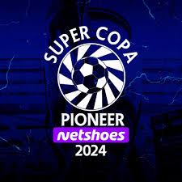
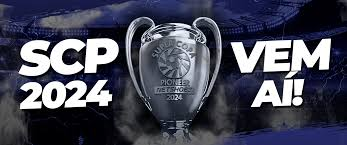

Campeonato Super Copa Pioneer
História A Super Copa Pioneer foi criada para comemoração do aniversário de 35 anos do PIONEER FC que foi fundado no dia 05 de Junho de 1981. Um dos times com maior tradição no cenário nacional do futebol amador/várzea, com um grande engajamento com a comunidade, e além de abrigar um celeiro de novos craques, existe a preocupação com a comunidade, desenvolvendo projetos sociais que visam a formação e o bem estar de crianças e jovens. Criada com o intuito de ser a maior vitrine e mais organizada competição da várzea, tornou-se a Liga dos Campeões da Várzea, sendo a principal competição no cenário nacional do Futebol Amador/Várzea brasileira. Hoje a SCP conta com os 80 melhores times da região de São Paulo, que são escolhidos após um criterioso processo de avaliação, além de uma rigorosa organização, gritando e incentivando nosso grande time.
Com um engajamento com a comunidade sem iguprevendo em seu regulamento, punições para torcida e jogadores, podendo inclusive haver a exclusão do time da edição atual e futuras da competição, além de outras 9 competições associadas. Tendo um público superior a 450.000 mil pessoas durante toda a competição. Com uma equipe de 90 pessoas divididas em duas sedes, focadas na organização e planejamento de todo o evento esportivo, entre elas equipe própria de filmagem, divulgação, narração, segurança, limpeza, e etc. Além de contar com todo o charme da “Orelhuda” (inspirada na taça da Champions League) a copa ainda dá uma premiação superior a R$250.000,00.
Onde tudo começou O Pioneer FC tem em sua essência o pioneirismo, de onde surgiu o nome Pioneer, sempre com ações diferenciadas, e inovadoras. O time foi fundado em 05/06/1981, com as cores vermelho, azul e branco. Localizado na Vila Guacuri, Zona sul da capital de São Paulo. Durante todos esses anos o Pioneer FC, foi campeão de diversos títulos, mas gostamos de destacar os títulos da Copa Kaiser São Paulo em 2010, e a Copa Kaiser Brasil também em 2010, onde fomos o pioneiro (primeiro) time de São Paulo a ganhar, e tivemos mais de 15.000 torcedores, al, além de organizar uma das melhores e maiores copa da Várzea, temos diversos projetos sociais, entre eles destacamos nossa escolinha de futebol, que foi fundada em 1999 com mais de 100 crianças, atualmente com mais de 400 crianças entre 6 a 18 anos. Além disso temos o projeto “Festa das Crianças” que desde 2008, realizamos um evento para comemoração ao dia das crianças, que atende um público superior a 3 mil pessoas, com a distribuição de brinquedos, doces e diversas brincadeiras. E em 2012, realizamos o sonho de construir na Vila Guacuri o Alzira Parque, um espaço de lazer para as crianças que possuiu um parquinho para a diversão das crianças do nosso bairro. Não somos apenas mais um time de várzea, mas sim uma família, a família Pioneer.